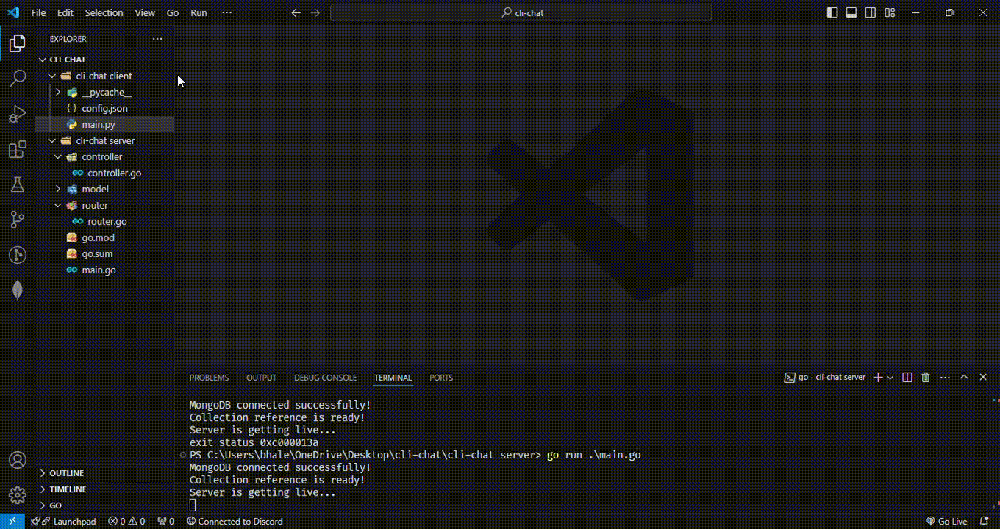

cli chat
june 2024
overview
CLI Chat is a lightweight command-line chat application built with Python. It allows users to exchange messages in real-time via terminal interfaces. Perfect for learning socket programming and basic networking concepts.
features
- Real-time messaging via terminal
- Simple client-server architecture using Python sockets
- Lightweight and easy to run
- Cross-platform (Windows/Linux/Mac)
demo
- README.md
-
API base url
Note: No index.html to render
https://cli-chat-1.onrender.com
tech stack
- Python
- Sockets for networking
- Terminal-based interface
how to run
Clone the repository and run the server and client scripts:
git clone https://github.com/ahhyoushh/cli-chat.git
cd cli-chat
python server.py
python client.py